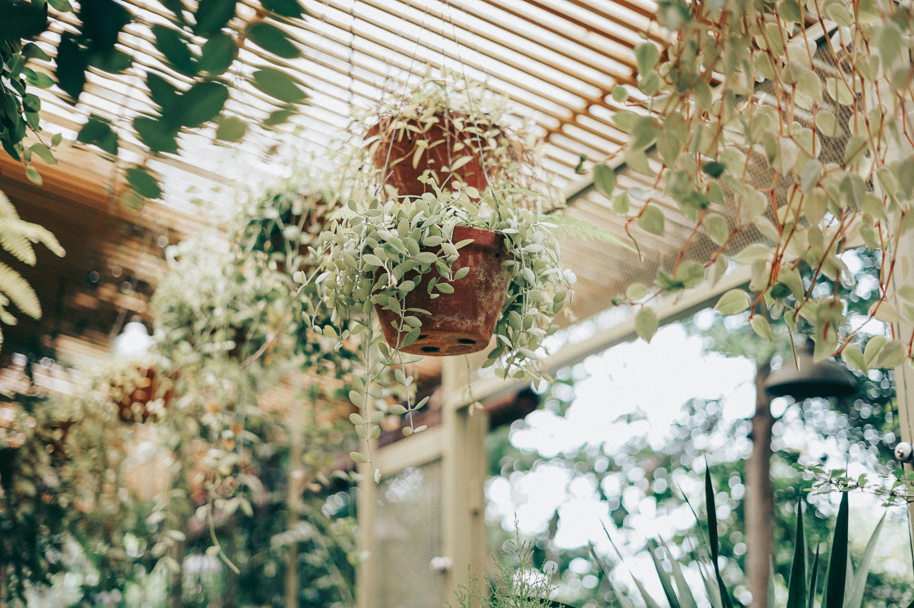

Plan Before Planting
Good seasonal gardening starts with understanding your available space, sunlight, growing conditions and the amount of care you can provide.
Before buying seeds or plants, look at your garden or balcony and decide which areas are best suited for flowers, herbs, vegetables or decorative greenery.
Make a simple planting plan before shopping. It helps you choose suitable plants and avoid overcrowding.
Choose Seasonal Plants
Seasonal flowers, herbs and garden plants can be easier to establish when planted during suitable growing periods.
Read seed packets and plant information carefully before selecting varieties. Consider sunlight, temperature, container size and the final space available.
Smart Seasonal Choices
- Select flowers suited to your current growing season.
- Choose herbs that match your available sunlight.
- Use containers for flexible planting spaces.
- Group plants with similar care requirements.
- Leave enough room for healthy growth.

Prepare The Soil
Healthy plants need a suitable growing medium. Before planting, check whether your existing soil is suitable for the plants you want to grow.
Container gardens often benefit from an appropriate potting mix, while garden beds may need compost or other soil improvements depending on their condition.
Prepare Early
Prepare containers and garden beds before planting day.
Use Suitable Soil
Choose a growing medium suited to your plants and containers.
Check Drainage
Make sure excess water can move away from the roots.
Refresh Soil
Refresh tired container soil when necessary.
Maintain Your Seasonal Garden
Planting is only the beginning. Once your garden is established, regular observation helps you understand what your plants need.
Check soil moisture, sunlight, plant growth and damaged leaves regularly. Small maintenance tasks can keep your garden looking healthy throughout the season.
A successful garden grows from thoughtful choices, good timing and consistent care.BloomNest Gardening Team
Seasonal Planting Checklist
Plan
Decide what you want to grow and where it will go.
Plant
Choose plants suitable for the current conditions.
Soil
Prepare containers and growing beds before planting.
Maintain
Monitor watering, sunlight and plant growth regularly.


BloomNest Gardening Team
Our gardening team shares practical planting ideas, seasonal guidance and simple ways to make everyday gardening more enjoyable.